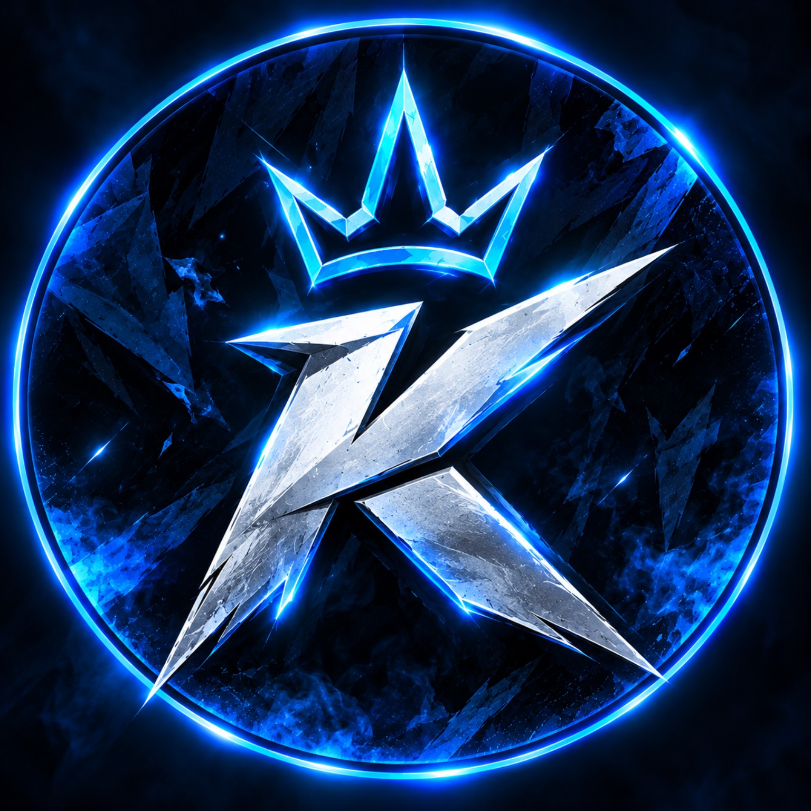
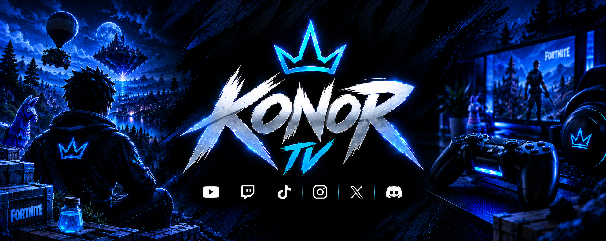

GAMING
Juegos, retos y
gran contenido

KONORTV
Sigue KonorTV en todas las plataformas
y forma parte de la comunidad desde el principio.
Juegos, retos y
gran contenido
Más que espectadores,
somos equipo
Disciplina, mejora
y constancia
Esto es solo
el comienzo
KONORTV
Gaming, contenido y comunidad. Cada partida, cada directo y cada vídeo forman parte del camino.